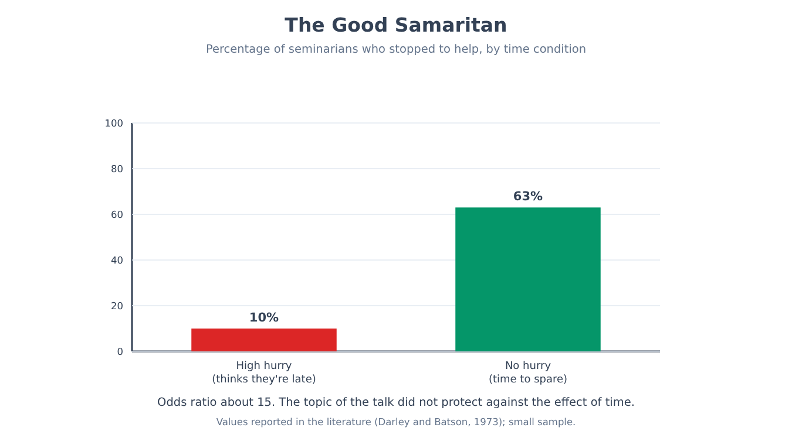
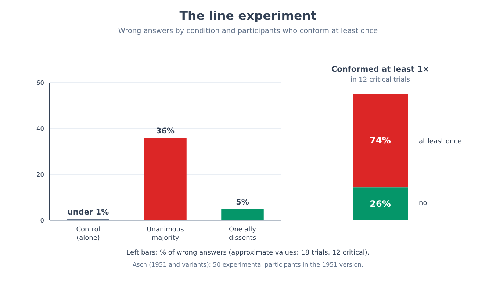
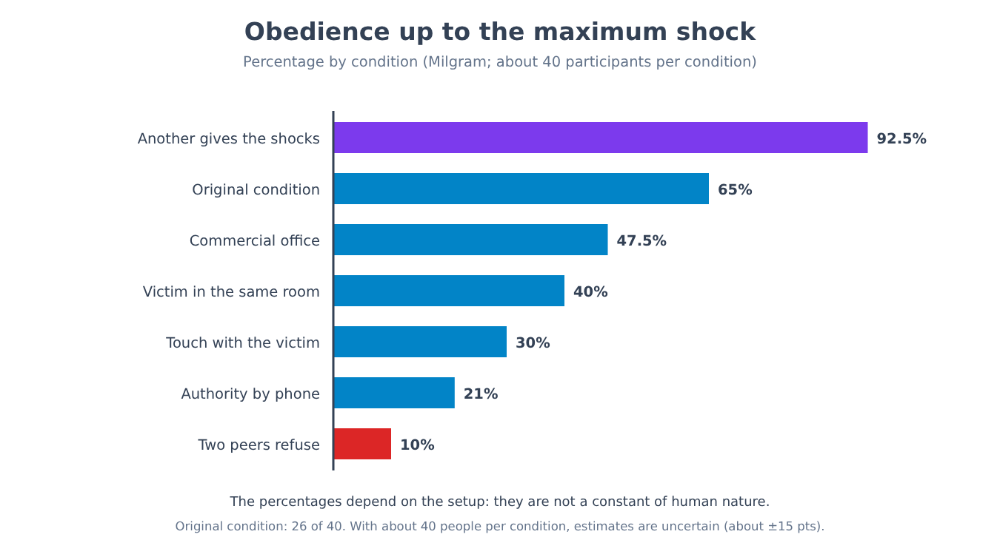
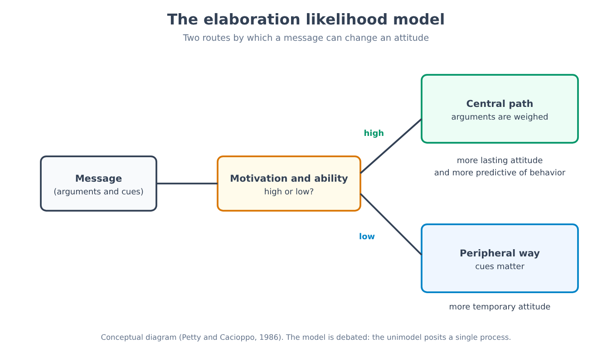
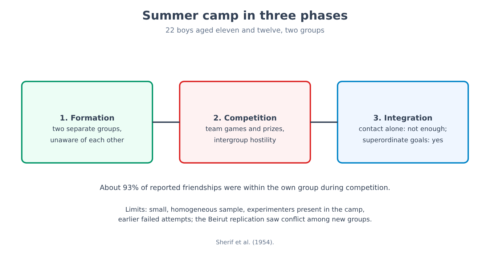
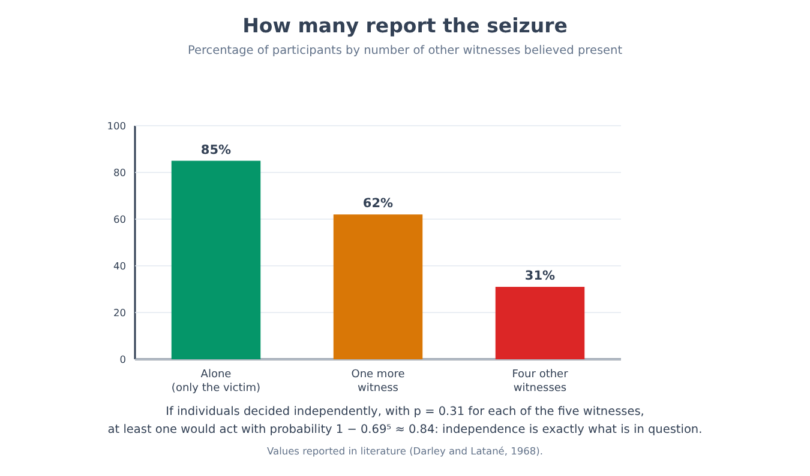

Part XI. Social psychology
Chapter 66 — The situation stronger than the disposition
[IN A NUTSHELL]
When we see someone behave badly, we tend to think that is just how they are; social psychology built a substantial part of its history by showing that the situation weighs more than we believe. This chapter sets out the thesis, the attribution error that motivates it, and two emblematic experiments (one on helping, one on a simulated prison), and reads them from today's vantage point: one holds up with caveats, the other has been largely scaled back. The thesis that emerges is subtler than the original.
Chapter 63 closed with an intermediate position: behavior depends on the person, on the situation, and on their interaction. The part that begins here takes the situation seriously. It asks which features of the context shift the behavior of ordinary people, which experiments have shown it, and with how much certainty. The first step is to understand why the question was needed: why, when we observe someone's behavior, the explanation that comes first almost always concerns the person.
Why we look at the person
If a colleague answers a question curtly, the explanation that forms fastest is that she is rude. Thinking that she had a hard morning, that she was running late for a deadline, or that the question reached her at a bad moment requires an extra step. For this tendency to explain other people's behavior through traits, intentions and attitudes, while underestimating the situation, Lee Ross (1977) proposed the name fundamental attribution error. He called it the “conceptual bedrock” of social psychology, an expression that the author of one of the experiments it had started from later judged provocative and partly misleading.
[THE EXPERIMENTAL DESIGN]
The experiment where it all starts is by Edward Jones and Victor Harris (1967). Participants read an essay for or against Fidel Castro, written by a student, and had to rate how favorable to Castro the author was. Half of the participants were told that the author had freely chosen the position to defend; the other half, that it had been assigned by the experimenter with a coin toss. The expected result, when the choice was free, was that the author of the pro essay would appear more favorable to Castro than the author of the anti essay. The surprising result is that the effect remained, weakened but present, even when the position had been assigned at random: the raters could not help attributing a sincere conviction to the author, despite knowing that the author had not chosen what to write.
The experiment is a good example of how an error is studied: one builds a situation in which the correct answer is known (the position was assigned at random, so the essay says little about the author) and observes whether participants use it. The result does not say, however, that people always ignore the situation: it says that, under these conditions, they give it less weight than logic would require.
[CONTROVERSIAL QUESTION]
The construct has had a more eventful history than its popular success suggests. One criticism distinguishes two things that are often conflated: the tendency to explain behavior through dispositions (the attribution error in the strict sense) and the tendency to infer a disposition from behavior that might depend on the situation (the so-called correspondence bias). A review by Bertram Malle (2006) found little support for the first form, while the second holds up better. Other authors (Walker, Smith and Vul, 2015) argue that many results were interpreted as errors only because they were compared with an unsuitable model of rationality. Universality is also debated: the correspondence bias appears in different cultures, but it is more marked in individualist societies, while children raised in India tend to give more weight to the situation than their American peers. The tendency to look at the person is real; its size, its form and its character as an “error” are matters of debate.
The Good Samaritan
[THE EXPERIMENTAL DESIGN]
In the study by John Darley and Daniel Batson (1973), students at a theological seminary were asked to record a short talk in another building on campus. Some were assigned the parable of the Good Samaritan as their topic, the one about the man who stops to help an injured stranger; others a different topic. Before setting off, participants received an indication about time: some were told they were already late, others that they still had a few minutes, others that they had time to spare. Along the way they came upon a man (a confederate) slumped in an alley with his head down, coughing and groaning, apparently in need of help. The variable measured was whether they stopped, and how. Before the experiment, measures of religiosity had also been collected, to see whether they predicted helping.
The results are among the most cited in social psychology: 10% of those in a great hurry stopped to offer help, against 63% of those who were in no hurry. The topic of the talk did not reliably protect against the effect of hurry: those about to speak on the Samaritan stopped somewhat more often (53% versus 29%), but with 40 participants the difference was not statistically significant, whereas the effect of hurry was.
[FORMULA]
The effect of a condition on the probability of helping can be expressed with the odds ratio, which compares the probabilities in two groups while taking into account how far they are from the extremes:
OR = [p₁ / (1 − p₁)] / [p₂ / (1 − p₂)]
Where:
• p₁ is the proportion of people who help in the comparison condition (no hurry);
• p₂ is the proportion of people who help in the other condition (great hurry);
• p / (1 − p) is the odds: the ratio between the probability of helping and that of not helping;
• OR equals 1 if the two conditions do not differ, and is larger than 1 the more the first condition favors helping.
Worked example. With p₁ = 0.63 and p₂ = 0.10: odds in the no-hurry condition = 0.63 / 0.37 ≈ 1.70; odds in the hurry condition = 0.10 / 0.90 ≈ 0.11. The ratio is OR ≈ 1.70 / 0.11 ≈ 15. For those not in a hurry, the odds of helping rather than not helping are about fifteen times higher. An effect this large in a small sample should be read with the caution of chapter 5: effects estimated on few participants tend to shrink in replications.

What does the result say? One reading is that hurry makes people indifferent to others. The authors themselves propose a different reading, one more accurate with respect to what the design allows us to say: those who were late experienced a conflict between the commitment made to the experimenter and the stranger's need, and in that condition they gave priority to the commitment. In both readings, the explanation lies in the situation and not in a lack of goodness in the person: a seminarian who is late is no worse than the same seminarian with time to spare.
It must be said that the study has limitations. The sample was small (a few dozen seminarians), with a single context and a single type of help, and the personality measures collected had not been able to predict helping better than the situation. That the situation has a powerful effect in certain contexts is a solid result; that hurry always has an effect of this size has not been demonstrated.
[COMMON BELIEF]
“Someone who walks past a person in trouble without stopping is an uncaring person.” Darley and Batson's result shows that the same person may help or not help depending on how much time they think they have. Saying that someone who does not stop is uncaring is a dispositional explanation of a behavior that, in that study, visibly depended on the situation. This does not mean there are no differences between people in their willingness to help, but that, from a single behavior in a single situation, the conclusion about character is much less solid than it seems.
The simulated prison
[THE EXPERIMENTAL DESIGN]
In the experiment by Philip Zimbardo and colleagues (1971, known as the Stanford prison experiment), 24 male students were selected from 75 applicants who had answered an advertisement for a study of “prison life” expected to last one or two weeks, with daily pay. Assignment to the role of guard or prisoner was random. A mock prison had been set up in the basement of a university building; the guards wore uniforms and mirrored sunglasses and received a generic instruction: maintain order without resorting to physical violence. The prisoners were “arrested” at home, identified by a number and locked up. The study was stopped after six days, instead of after the planned two weeks, because the guards' behavior and the prisoners' reactions had become worrying. In the accounts, some guards became increasingly humiliating and some prisoners showed signs of emotional breakdown, so much so that one was released after about thirty-six hours.
For decades the study was presented as proof that a situation, and in particular a role with asymmetric power, turns ordinary people into cruel ones. The current reading is much more cautious, for reasons that concern the design itself.
[DOES IT STILL HOLD?]
There are four objections. The first concerns demand characteristics, that is, the cues by which an experimental situation suggests to participants what is expected of them: as early as 1975, Carlo Banuazizi and Siamak Movahedi argued that participants knew what was expected of them and behaved accordingly. The second concerns the instructions to the guards: recordings and testimonies (Thibault Le Texier, 2018 and 2019) show that the guards were urged to be “tough,” which makes their behavior the result of a request rather than of a spontaneous slide into the role. The third concerns selection: the advertisement mentioned prison life, and one study (Carnahan and McFarland, 2007) found that an advertisement of this kind attracts people with more aggressive and authoritarian traits than a generic advertisement. The fourth concerns replicability: there is no direct replication, the sample is small, there is no control condition, and effect sizes cannot be quantified. The authors and some colleagues replied, in a joint statement in 2018, that the study retains validity; in the debate, the question of how spontaneous the guards' behavior was remains open in particular.
An indirect test came from an attempted partial replication, broadcast on television and studied by Alexander Haslam and Stephen Reicher (the BBC prison study, published in 2006), in which the guards received no instructions on how to behave. The result was different: participants did not slip mechanically into their assigned roles, and the emergence of tyrannical behavior depended on how the group identified with the roles and on who exercised leadership. The authors drew from this the thesis that people do not obey a role passively but identify with a group and with those who lead it. This too is an interpretation, and the design, given its television format, is not free from criticism.
[MIND THE LEAP]
From the fact that, in an artfully constructed situation, some people showed cruel behavior, it does not follow that anyone placed in the same situation would show it, nor that the situation alone is enough to produce it. From the observation that a role can be accompanied by certain behaviors, it does not follow that it causes them: in the Stanford study, instructions, expectations and selection are variables confounded with the role. The most common leap is from the laboratory experiment to moral judgment about real cases of institutional violence: the Stanford experiment is not the proof that explains, for example, how abuse happens in real prisons.
What remains of the thesis
After these readings, the original thesis has to be reformulated. It does not hold in its strong form, according to which situations determine behavior and people matter little: the Samaritan experiment shows a large effect of hurry, but it does not quantify the effect of differences between people, which in chapter 63 had correlations of the same order as many situational effects. It holds in a more modest form: situations have substantial effects, often underestimated by observers, and mechanisms such as conflict between commitments, identification with a group, and the demands of an authority produce effects that cannot be predicted from traits alone. The three chapters that follow show how much, in practice, the influence of others weighs on behavior: conformity (chapter 67), obedience (chapter 68), and the dissonance between what we do and what we think (chapter 69). Chapter 72 will return to helping and to group behavior.
From a methodological point of view, this chapter also carries an instruction for the rest of the part: the most celebrated experiments in social psychology are often those with small samples, constructed situations and strong results, that is, the conditions in which, according to chapter 5, an effect is most likely to be overestimated. This does not make them false, and their historical importance is not in question; it means that the correct way to read them is together with more recent data.
[NUMBERS]
• 10% versus 63%: people who stopped to help, with great hurry and with no hurry respectively (Darley and Batson, 1973); odds ratio about 15.
• 24 out of 75: students selected from the applicants for the Stanford study; planned duration one or two weeks, stopped after six days.
• No effect size figure is available for the Stanford study: there is no comparison with a control condition.
[MINI-TIMELINE]
• 1967: Jones and Harris, the Castro essay.
• 1971: Stanford prison experiment.
• 1973: the Good Samaritan (Darley and Batson).
• 1977: Ross coins “fundamental attribution error.”
• 2006: BBC prison study (Haslam and Reicher); Malle's review of the actor-observer asymmetry.
• 2018-2019: Le Texier challenges the classic account of the Stanford study.
[KEY POINT OF THE CHAPTER]
• We tend to explain other people's behavior through traits more than through the situation (fundamental attribution error, Ross, 1977); the construct is debated, and the strict-sense form has less support than the correspondence bias.
• In the study by Jones and Harris (1967), participants attributed a sincere conviction to the author of an essay even when the position had been assigned at random.
• In the Good Samaritan study (Darley and Batson, 1973), 10% of those in a great hurry helped, and 63% of those in no hurry (odds ratio about 15); the effect of the talk's topic was not statistically significant. The sample was small (40 seminarians).
• The Stanford experiment (1971) does not hold as proof that the role produces cruelty: demand characteristics, instructions to the guards and selection are variables confounded with the role, and there is no direct replication.
• The thesis holds in a modest form (situations matter and are underestimated) and not in a strong form (people matter little).
Chapter 67 — Conformity
[IN A NUTSHELL]
How much do we change what we say, or what we believe, because others say the opposite? This chapter sets out the two experiments that defined the problem (one on an ambiguous judgment, one on an obvious judgment), the factors that increase or reduce conformity, the distinction between two kinds of influence, and what has remained after replications and comparisons across eras and cultures. The thesis is less bleak than it is usually told.
Imagine being in a room with seven other people, in front of two cards: on one there is a line, on the other three lines of different lengths, and you have to say which of the three matches the first. The task is so easy that anyone, alone, gets it right almost every time. Then, one after another, the seven people before you give the same answer, and that answer is plainly wrong. What do you do? Put this way, the question divides those who hear it: almost everyone is certain they would say what they see. The data tell a more nuanced story, and to understand it, it helps to start from a task in which no right judgment exists.
When you don't know what to think: the norm that arises in the group
[THE EXPERIMENTAL DESIGN]
Muzafer Sherif (1935) exploited a perceptual phenomenon: in a completely dark room, a stationary point of light appears to move (autokinetic effect), even though it does not move at all. Participants were asked to estimate aloud how far the point had moved. Alone, each developed their own range of estimates, stable but different from everyone else's. Then the participants were brought together in small groups and repeated the task, saying their estimates aloud in the presence of the others. Under these conditions the members' estimates converged toward a common value, which the group developed on its own. In other versions, those who had done the task first in a group and then alone kept the group's estimate and did not return to their own.
The task is constructed so that no one can be right: the point does not move, so every estimate is arbitrary. When reality offers no criterion, people use others as a source of information, and the result is the emergence of a social norm, that is, a shared rule about what is considered appropriate or correct. One question remains open: what happens when a criterion does exist, and the others contradict it?
When you do know what to think: the lines
[THE EXPERIMENTAL DESIGN]
In Solomon Asch's experiment (1951, with variants in 1955 and 1956), a group of male college students was invited to take part in a test of “visual perception.” In each group there was only one naive participant; the others, about seven, were confederates of the experimenter. On each trial the group saw a reference line and three comparison lines, one of which was identical to the first; the others differed obviously. Each person had to say aloud which one it was, in order, with the naive participant almost always among the last to answer. There were eighteen trials: on twelve (the critical trials) the confederates all gave the same wrong answer, agreed upon in advance. A control group, in which participants answered alone or without pressure, showed how easy the task was: errors were less than one percent. There were 50 experimental participants in the 1951 version.
On the critical trials, participants went along with the group's wrong answer in just over a third of responses (sources report values between 35 and 37% depending on the version). 74% of them, that is, almost three out of four, conformed at least once over the twelve critical trials. 26% never did, and about 12% conformed on almost all trials. Subsequent interviews pointed to different motivations: some participants said they had doubted their own eyesight; others knew they had seen correctly and had gone along so as not to stand out.
[COMMON BELIEF]
“Asch showed that most people bow to the majority.” The data do not say that. In two responses out of three, participants gave the right answer despite the unanimity of the others, and more than one in four never conformed. What the data show is something else: in a task in which being wrong was obvious, social pressure stripped to the bone (strangers, with no rewards or sanctions) was enough to make almost three people out of four give a wrong answer, at least once. The difference between “most people always bow” and “almost everyone bows sometimes” is the difference between a false picture and a true one.
[FORMULA]
If every person had the same probability p of conforming on each trial, and the trials were independent, the probability of conforming at least once over n critical trials would be:
P(at least once) = 1 − (1 − p)ⁿ
Where:
• p is the probability of conforming on a single critical trial;
• 1 − p is the probability of answering independently on that trial;
• n is the number of critical trials;
• (1 − p)ⁿ is the probability of never conforming on any of the n trials, if the trials are independent.
Worked example. With p = 0.36 and n = 12: (1 − 0.36)¹² = 0.64¹² ≈ 0.005, so P(at least once) ≈ 1 − 0.005 = 0.995, that is, about 99.5%. The value Asch observed, however, is 74%. The difference is not a flaw in the study: it says that people are not all the same. If some never conform and others conform almost always, the average probability of one third describes no one in particular, and the assumption that everyone has the same p fails.

Two ways of being influenced
Morton Deutsch and Harold Gerard (1955) proposed distinguishing two reasons why others influence us. Informational influence operates when others are a source of information about reality: if everyone says the point moved fifteen centimeters, they are probably right, or at least that is what helps me decide. Normative influence operates when I conform in order to be accepted by the group or to avoid the discomfort of standing out, even without believing the others are right. Sherif's experiment is mainly a case of the first kind: no external criterion, so the others are the only information. Asch's is mainly a case of the second: the criterion exists and is obvious, and those who conform do so because they are uncomfortable contradicting seven people, not because they believe them. The outcome is also distinct: one can adjust one's behavior without changing one's opinion (public compliance), or actually change what one thinks (private acceptance). Asch mainly observed the former.
What increases and decreases conformity
Asch himself varied the conditions, and the variations are the most instructive part of the work. The most powerful factor is unanimity: a single confederate giving the right answer was enough for the number of wrong answers to drop sharply, to about 5%. A single ally, even one who was not an expert, made it much easier to express one's own judgment. The number of confederates also mattered: with a single opponent, conformity was low; it rose appreciably with two or three, and beyond three it grew no further. Conformity decreased when the answer was written rather than spoken aloud, that is, when conforming was not visible to the others. And it depended on the difficulty of the task: the more ambiguous the judgment, the greater the influence of others.
[CONTROVERSIAL QUESTION]
Does conformity change across eras and cultures? A meta-analysis that pooled studies using Asch's task in various countries (Bond and Smith, 1996) reported higher conformity in cultures that value the group more than the individual, and a decline over time in U.S. studies after the 1950s. A British replication with engineering students (Perrin and Spencer, 1980) found practically zero conformity, and the authors related this to the participants' professional and historical context. There are two possible readings. One is that conformity changes with a society's values and with the characteristics of the participants. The other is that the results depend on details of the design (how the trials are presented, what participants are told) and on the fact that more recent studies are fewer and less uniform. The data do not yet allow a choice. It should be kept in mind that the original sample consisted of male American college students.
What holds and what does not
[DOES IT STILL HOLD?]
The central fact holds: a unanimous majority can lead a not-small share of people to state, at least once, a judgment they know to be wrong, and a single dissenter greatly reduces this. The reading according to which people “always follow the crowd” does not hold. It has not been shown that the effect has the same size today, in other cultures, and in contexts with real consequences: the conformity observed in the laboratory concerns an unimportant task, among strangers, with no cost at all for those who dissent.
[MIND THE LEAP]
From the fact that seven strangers can make someone err on a line task, it does not follow that the same happens with important decisions, with loved ones, or in a company or a school. Real social pressure can be stronger (there is a social cost to dissenting) or weaker (there is time to talk things over and look for an ally). Nor does it follow, from the fact that most judgments remained independent, that conformity is rare: the answer changes depending on whether one looks at the single response or at the person.
Conformity is not always a flaw. Following others' cues is often an efficient way of obtaining correct information, and Sherif's experiment shows how a common convention arises. The problem Asch's experiment brings into view is the case in which personal judgment is right and the group is wrong, and what is needed to correct the error is, according to the result on the variants, a single ally. The next chapter moves from a group of peers to an authority: from someone who says something to someone who gives an order.
[NUMBERS]
• 50 experimental participants (1951); 18 trials, of which 12 critical; about seven confederates per group.
• Less than 1% errors in the control; just over a third (35-37%) conforming responses on critical trials.
• 74% conform at least once; 26% never; about 12% almost always.
• About 5% conforming responses with an ally who gives the right answer.
• The constant-probability model would predict about 99.5% conforming at least once (example): the observed value is 74%.
[MINI-TIMELINE]
• 1935: Sherif and the norm in the autokinetic effect.
• 1951: Asch and the line task (variants in 1955 and 1956).
• 1955: Deutsch and Gerard distinguish informational and normative influence.
• 1980: British replication with almost zero conformity.
• 1996: Bond and Smith's meta-analysis across cultures and years.
[KEY POINT OF THE CHAPTER]
• When no criterion exists (autokinetic effect, Sherif, 1935), participants' estimates converge into a group norm.
• In the line experiment (Asch, 1951), about a third of responses on critical trials conformed and 74% of participants conformed at least once; 26% never did, and two responses out of three remained independent.
• With a constant probability p ≈ 0.36 and twelve trials, conforming at least once would be almost certain (1 − (1 − p)ⁿ ≈ 99.5%): the observed 74% reveals individual differences.
• Influence is informational (others are a source of information) or normative (one seeks acceptance); one can adjust one's behavior without changing one's opinion.
• A single ally greatly reduces conformity; the effect grows up to about three people and then levels off; a private response reduces it.
• Differences across cultures and eras, and a replication with zero conformity, show that the effect depends on context; the sample consisted of male American students.
Chapter 68 — Obedience
[IN A NUTSHELL]
Ordinary people, in a university laboratory, kept delivering ever stronger shocks to a stranger because a researcher asked them to. This chapter sets out the design in detail, the results for each condition, the objections concerning validity and ethics, what re-examinations of the archives report, and what can still be claimed. It fulfills the promise about ecological validity (chapter 3) and applies the replicability criteria of chapter 5 to the case.
Ask anyone why ordinary people inflicted suffering on a stranger just because a man in a gray lab coat asked them to, and you will almost always hear the same answer: they must have been especially cruel or especially weak. The answer is reassuring, because it leaves intact the idea that we, in their place, would have behaved differently. The problem is that the data from the original experiment do not confirm that those people were unusual: they had been recruited through an advertisement, with no other criteria. If the explanation does not lie in the character of those who obey, it must lie elsewhere. To understand where, we need to see how the experiment was done, because every word of the design matters.
The original design
[THE EXPERIMENTAL DESIGN]
In Stanley Milgram's experiment (1963), conducted at Yale University, 40 men between twenty and fifty years of age, recruited through an advertisement for a study on “memory and learning,” arrived at the laboratory paired with another “participant,” in reality a confederate. Through a rigged drawing, the real participant was always given the role of “teacher” and the confederate that of “learner.” The learner was strapped into a chair in an adjoining room, with electrodes on his wrists, while the teacher, in another room, sat in front of a shock generator with thirty switches, from 15 to 450 volts, with labels ranging from “slight shock” to “danger: severe shock” and, for the last two, a simple “XXX.” The teacher's task was to read word pairs and administer a shock, stronger with each error. The learner, following a script, made frequent errors and protested in increasingly intense ways; at a certain level he pounded on the wall and then stopped responding. If the teacher hesitated, the experimenter, in a gray lab coat, responded with four sentences in a fixed order: “Please continue”; “The experiment requires that you continue”; “It is absolutely essential that you continue”; “You have no other choice, you must go on.” After the fourth refusal, the experiment ended. No coercion or threats were used. No shock was actually administered.
Before the experiment, a group of competent people (including psychiatrists) were asked to predict how many participants would reach the maximum shock: the estimates indicated a tiny fraction, on the order of a few pathological cases. The result was very different. All forty participants reached 300 volts; 26 out of 40, or 65%, continued to the last switch, the 450-volt one. Many showed intense strain: they sweated, trembled, laughed nervously, protested, but went on.
The experimental conditions
Milgram did not stop at the original version: he conducted some twenty variants, each modifying a single aspect of the design, all with samples of around forty people. These variants are the most instructive part of the work, because they show what obedience depends on.

In the condition in which the experimenter gave instructions over the telephone and was not present, about 21% obeyed. When the learner was in the same room, obedience fell to 40%; when the teacher had to press the learner's hand onto a plate to deliver the shock, to 30%. When the experiment took place in a commercial office instead of at Yale, 47.5% was observed, a difference that was not significant compared with the original condition. Two variations show the effect of others: when two peers (confederates) refused to continue during the experiment, the teacher went all the way in only 4 cases out of 40, or 10%. When, instead, another “teacher” (a confederate) physically administered the shocks and the participant merely read the words and recorded the answers, almost everyone, 37 out of 40, stayed until the end.
[FORMULA]
Obedience of 65% among 40 people is an estimate, and must be accompanied by its uncertainty. The standard error of a proportion measures how much the observed proportion can vary purely because of sampling:
SE = √[ p̂ · (1 − p̂) / n ]
From which an approximate 95% confidence interval (as in chapter 4): p̂ ± 1.96 · SE
Where:
• p̂ (p-hat) is the proportion observed in the sample;
• n is the number of participants;
• SE is the standard error;
• 1.96 is the value that leaves out 5% of cases, half on each side, in a bell-shaped distribution.
Worked example. With p̂ = 26/40 = 0.65 and n = 40: SE = √(0.65 · 0.35 / 40) = √0.00569 ≈ 0.075. The interval is 0.65 ± 1.96 · 0.075 = 0.65 ± 0.15, that is, from about 0.50 to 0.80. Obedience in that condition, in the population from which the 40 come, plausibly lies between 50% and 80%. For the commercial-office variant (19 out of 40, or 47.5%), the interval is about 0.32-0.63: the two intervals overlap a great deal, and this explains why the 17.5-point difference does not turn out to be significant (a direct comparison of the two proportions gives the same outcome: z ≈ 1.6, p ≈ 0.11).
What explains obedience
Milgram proposed to explain it with the agentic state: a person who places himself in the service of a legitimate authority stops feeling responsible for his own actions and regards himself as an instrument of the one in command. The variants seem compatible with this idea: obedience decreased when the authority was distant or its role was called into question (the two peers who refused) and when the victim was closer. One problem remains, however, which more recent analyses have brought to light.
Alexander Haslam, Stephen Reicher and colleagues analyzed the recordings and the variants, and noticed that the experimenter's four sentences did not have the same effect. The sentences that sounded like direct orders (“You have no other choice, you must go on”) reduced obedience, while those that appealed to the importance of the experiment for science (“The experiment requires that you continue”) increased it. If an order had been enough to produce obedience, the opposite would have happened. The proposed reading, called engaged followership, is that participants continued not to obey an order but because they identified with the scientific project and with those who represented it, convinced they were contributing to a cause they considered worthwhile.
[CONTROVERSIAL QUESTION]
Obedience to an authority or identification with a cause? In the classic reading, the participant hands responsibility over to the one in command. In Haslam and Reicher's reading, the participant actively commits to a goal he shares, and the person in command is the representative of that value. The two readings predict different behaviors: the first, that the most authoritarian sentences work best; the second, that those appealing to the purpose work best. The data on the four sentences are closer to the second. It does not follow, however, that the first should be discarded entirely: the variants on the presence and distance of the authority are compatible with both, and reconstructing the psychological process from behavioral outcomes alone remains uncertain.
Validity: what was found in the archives
Chapter 3 had left open the question of ecological validity (3 → 68): does a result obtained in an artfully constructed laboratory apply to real life? For Milgram's experiment the question has two versions. The first is whether participants believed the shocks were real. The second is whether obedience to a scientist in a laboratory says anything about obedience outside the laboratory.
On the first, a re-examination of Milgram's archives by Gina Perry (2012) reported that only about half of the participants fully believed the procedure, and that, among those who did believe it, about two thirds (66%) had disobeyed. If this finding holds, the classic percentage would have been inflated by participants who suspected the deception. The finding is a reading of archival material by a single author, in which the classification of who “believed” is itself an interpretation, and it has not been independently confirmed. Milgram himself had asked participants, at the end of the study, how much they had believed the procedure, and reported that a substantial share, but not all, said they believed it; the two accounts differ in their interpretation of what counts as “believing,” and there is no way to repeat the procedure to decide.
On the second, the literature is divided. The study shows that in a situation with a legitimate authority, a gradual request and a victim who is not physically present, many people continue. It does not show that people passively obey any order, nor that that mechanism alone explains historical behaviors such as those of people who took part in collective violence: some historians and psychologists argue that those who committed mass violence also acted out of conviction and identification with a project, which is closer to Haslam and Reicher's reading.
[COMMON BELIEF]
“Milgram showed that 65% of people obey any order, even a cruel one.” The 65% concerns a specific condition, with 40 men, in a university laboratory, with an experimenter present and nearby. Changing one variable, the percentage fell to 21% or 10%, or rose to 92% (if it was not the participant who pressed the switch). The 65% is not a constant of human nature: it is the value of one configuration. Even in that configuration, about a third did not go all the way.
Ethics
The experiment was criticized almost immediately. Diana Baumrind (1964) observed that participants had been subjected to intense emotional stress, deceived about the purpose and about the presence of a real victim, and that the debriefing could not undo the experience they had lived through. Milgram replied that after the experiment participants had been informed and that, in follow-up questionnaires, the great majority had said they were glad to have taken part. The debate had a lasting effect on norms: today's ethics committees would not approve the original procedure, which in practice prevents a direct replication.
Replications, in light of chapter 5
The Milgram case puts the replicability criteria of chapter 5 to the test, because it is an almost textbook situation: a famous result that no one can repeat in the same way. A partial replication (Jerry Burger, 2009) modified the design to reduce the risk to participants: the experimenter stopped the procedure after the 150-volt switch, the point at which the learner first asked to be released, and that point was used as an indicator of who would have continued. In Milgram's design, those who had gone past 150 volts tended to continue all the way. Obedience turned out to be “virtually identical” to that of the original study up to that level, among both men and women. The cautious reading is that the basic effect is found again, with the limitations of a procedure that does not reach the end and of a different sample; it does not settle the question of the exact percentages or of the interpretation.
The picture that emerges, by the criteria of chapter 5, is this. The qualitative result (a substantial fraction of ordinary people continue, under defined conditions, to inflict harm at the request of an authority figure) has been observed in many variants and in a partial replication. The exact numbers cannot be considered stable: the samples were of about forty people, direct replications are lacking, and the reading of the archives casts doubt on part of the sample. The psychological interpretation is the least certain aspect.
[DOES IT STILL HOLD?]
What holds: the conclusion that an authority, even without threats, can lead ordinary people to inflict harm; the dependence of obedience on proximity, presence of the authority and the behavior of others. What partly holds: the 65% figure, given the reservations about credibility and sample. What does not hold as a complete description: the idea of passive, blind obedience, because the data on the four sentences point to a role for identification with the purpose.
[MIND THE LEAP]
From 65% in one laboratory condition it does not follow that two people out of three would commit atrocities if an authority asked them to. From obedience in the laboratory it does not follow that obedience explains the behavior of those who take part in collective violence. And from the fact that a study cannot be replicated today, for ethical reasons, it does not follow that its results are false: it follows that their strength must be assessed by other means.
[NUMBERS]
• 40 men; all to 300 volts; 26 out of 40 (65%) to 450 volts; 95% confidence interval from about 0.50 to 0.80.
• Conditions: about 21% (telephone), 40% (same room), 30% (touch), 47.5% (commercial office), 10% (two peers refuse), 37 out of 40 (someone else administers the shocks in place of the participant).
• Re-examination of the archives (Perry, 2012): about half of the participants fully believed the procedure; among these, 66% disobeyed.
[MINI-TIMELINE]
• 1963: Milgram publishes the Yale experiment.
• 1964: Baumrind criticizes the ethics of the study.
• 1970s: rules on research with human subjects make the original procedure unrepeatable.
• 2009: Burger's partial replication, stopping at 150 volts.
• 2012: Perry publishes the re-examination of the archives.
• 2010s: Haslam, Reicher and colleagues propose the engaged-followership reading.
[KEY POINT OF THE CHAPTER]
• In the original study (Milgram, 1963), with 40 men, all reached 300 volts and 26 out of 40 (65%) reached 450 volts; the 95% confidence interval runs from about 50% to 80%.
• Obedience depended on the condition: about 21% with the authority on the telephone, 40% with the victim in the same room, 10% if two peers refused, almost everyone if they were not the ones pressing the switch.
• The sentences most like orders reduced obedience and those appealing to science increased it: this supports the reading that participants identified with the purpose, more than the reading of passive obedience.
• A re-examination of the archives (Perry, 2012) indicates that about half of the participants did not fully believe the procedure, and that among those who did believe it 66% disobeyed: a finding not independently confirmed.
• The design cannot be replicated for ethical reasons; a partial replication (Burger, 2009) found similar results up to 150 volts.
• The qualitative result holds; the exact percentages and the psychological interpretation do not.
Chapter 69 — Cognitive dissonance and self-justification
[IN A NUTSHELL]
After doing something that does not match what we think, we tend to bring our beliefs closer to what we have done. This chapter sets out the theory of dissonance, the experiment that made it famous, two other paradigms, the later reformulations, what a large multi-lab replication in 2024 found, and how this idea relates to the rationalization described by psychoanalysis. It picks up the defenses described in chapter 10 and fulfills the promise made in chapter 13.
You spent a lot on something that turns out to be mediocre: a badly organized vacation, a course that cost too much. In the following days, if someone mentions it, you notice that you find merits in it: “after all, the place was quiet,” “I learned more than it seems.” You are not lying to others: it seems you are convincing yourself as well. Social psychology gave this tendency a name and a theory, and subjected it to experiments. The theory has a part that holds up well and a part that the most recent replications have called into question, and distinguishing them is the purpose of this chapter.
The theory
Leon Festinger (1957) proposed that people implicitly keep a balance sheet of their cognitions, that is, their beliefs, knowledge and perceptions of themselves and the world, and that two cognitions that do not fit together produce an unpleasant state, cognitive dissonance. “I am an honest person” and “I just told a lie” are dissonant; so are “smoking is harmful” and “I smoke.” According to the theory, dissonance is like a tension that drives us to reduce it, and this can be done in different ways: by changing the behavior, by changing one of the two beliefs, by adding a cognition that reconciles them (“smoking helps me manage stress”), or by reducing their importance (“it was a small lie”). The theory further predicts that dissonance is stronger the more important the cognitions involved are and the more numerous the dissonant ones are relative to the consonant ones.
[FORMULA]
Festinger proposed, as a conceptual model and not as a direct measure, that the magnitude of dissonance depends on the ratio of dissonant cognitions to the total, each weighted by its importance:
D = Σ (importance of dissonant) / [Σ (importance of dissonant) + Σ (importance of consonant)]
Where:
• D is the magnitude of dissonance, between 0 (none) and 1 (maximum);
• Σ denotes the sum over cognitions of that type;
• the dissonant cognitions are those that contradict the behavior or belief under examination; the consonant ones are those that support it.
Worked example (with illustrative values, assigned by the author to show the logic). A person has told a lie: the dissonant cognition (“I lied”) has importance 4. In condition A there is one consonant cognition, “they paid me one dollar,” with importance 1: D = 4 / (4 + 1) = 0.80. In condition B the consonant cognition is “they paid me twenty dollars,” with importance 5: D = 4 / (4 + 5) ≈ 0.44. For the same lie, a high payment reduces dissonance, and a low payment leaves it high. The formula was never a practical measure: “importances” are not measured in common units, and that is why the theory was tested with experiments and not with this equation.
The insufficient-justification experiment
[THE EXPERIMENTAL DESIGN]
In the study by Leon Festinger and James Carlsmith (1959), 71 male Stanford students (60 included in the final analysis) spent about an hour performing very boring tasks (for example, repeatedly turning pegs on a board). At the end, the experimenter explained that the study concerned the effect of expectations, and that the next participant, waiting in the adjoining room, had to be prepared to believe that the task was interesting; the assistant usually in charge of telling him was unavailable, and the experimenter asked the participant to do it. The participant, therefore, lied to a person who behaved like another participant but was in fact a confederate. For this service, half of the participants received one dollar, the other half twenty dollars; a control group said nothing to the supposed participant. In a final interview, conducted by a different person and presented as independent, everyone was asked to rate how interesting they had found the task.
The result is the ordering, not a simple difference: those who had received one dollar rated the task as more interesting than those who had received twenty dollars, and those who had received twenty dollars rated it only slightly more positively than those who had said nothing. The theory's interpretation is that twenty dollars were sufficient justification for the lie: dissonance was low, and there was no need to change one's opinion. One dollar was insufficient justification: dissonance was high, and the simplest way to reduce it was to change one's opinion of the task (“it wasn't so bad after all”). The result is counterintuitive, because it seems that a smaller reward produces a larger change, and that is why the experiment became a landmark.
An alternative explanation, proposed by Daryl Bem (1967), is self-perception: people infer their own attitudes by observing their own behavior, as an outside observer would, and an observer would say that someone who lied for one dollar must have believed what he was saying. Bem's theory predicts the same results without invoking an unpleasant state. The difference between the two lies in arousal: dissonance predicts a tension, self-perception does not, and some later studies measured an increase in physiological arousal under conditions of dissonance, which supports the former, although it does not settle the matter entirely.
Two other paradigms
The idea has also been tested in other situations. In the free-choice paradigm, after choosing between two objects of similar value, people rate the chosen object more positively and the rejected one less positively than they did before, because every rejected alternative has merits that are dissonant with the decision. In effort justification, Elliot Aronson and Judson Mills (1959) found that people who underwent an embarrassing initiation procedure to join a boring discussion group rated it as more interesting than those who had gone through a mild procedure: effort has a cost that is justified by thinking the result is worth it. These two paradigms are less solid than their fame would suggest, and their outcomes in repetitions have been debated.
The reformulations
The original theory has received three main reformulations, which change its core. For Aronson (1969), dissonance arises not from just any inconsistency but from a threat to one's positive self-image: it is the conflict between “I am an honest person” and “I lied.” For Joel Cooper and Russell Fazio (1980s), the source of dissonance is having caused negative consequences: if the behavior has no unpleasant consequences, there is no dissonance; later studies found dissonance even when participants believed they had done nothing wrong, which complicates this reading. For Eddie Harmon-Jones, in the action-based model (with Harmon-Jones and Levy, 2015), dissonance arises when cognitions interfere with goal-directed behavior, and it serves to make action possible. Another proposal, self-affirmation, holds that dissonance is also reduced by affirming another value important to oneself, without changing the opinion in question. The four reformulations are not mutually exclusive, and each explains some results better than the others.
The 2024 replication
[DOES IT STILL HOLD?]
In 2024, David Vaidis, Willem Sleegers and colleagues published a constructive replication of the induced compliance paradigm, that is, the one in which a person is induced to behave contrary to their own opinion, with almost 4,900 participants in 39 laboratories in 19 countries. The design did not copy the 1959 study: it took up, in updated form, a 1983 study by Croyle and Cooper. After expressing their opinion on some university policies, participants were told that a committee was considering a tuition increase, unpopular among students. Some had to write an essay in favor of the increase (low choice), others could choose whether to write it (high choice), and a control group suggested other topics. Those who wrote the essay in favor changed their attitude more than those who wrote a neutral essay, which supports the central idea: behaving contrary to one's opinion leads to changing it. But those who had chosen freely did not change more than those who had been directed: the effect of choice was not replicated. The authors concluded that the paradigm does not provide robust evidence for dissonance as a mechanism, and that the theory needs to be reassessed.
The cautious reading is this. The basic observation holds: after behavior that runs contrary to one's opinions, those opinions tend to shift toward the behavior. The ingredient the theory considered decisive, namely that free choice is necessary, does not hold up solidly; and this calls into question the explanation, not the phenomenon. The phenomenon could depend on other mechanisms, such as self-perception or the adjustment of opinions for consistency, which do not require an unpleasant tension.
[CONTROVERSIAL QUESTION]
Why does opinion change? According to dissonance theory, to reduce an unpleasant state; according to self-perception, because people interpret their own behavior; according to other readings, because people want to maintain a consistent image in front of others, not in front of themselves. The available data, including measures of physiological arousal and the 2024 replication, are compatible with more than one reading and do not allow us to choose just one. One relevant finding is that the result on the effect of choice, central to the theory, does not hold in the largest replication.
Rationalization, and the relationship with chapter 10
Chapter 10 presented the defenses as tools with which the mind keeps at bay what is unacceptable, and chapter 13, in taking stock of the psychoanalytic tradition, referred to this chapter for a comparison (13 → 69). Rationalization, in psychoanalytic language, is the defense by which one justifies with acceptable motives a behavior or a desire whose real motives are unacceptable. The parallel with dissonance is evident: in both cases, a person gives himself a better explanation than the real one.
There are two differences, and they concern method more than the idea. The first is that psychoanalytic rationalization is an unconscious process linked to a repressed drive, which is inferred in treatment; dissonance is a process studied in experiments, with a manipulation (one dollar or twenty) and a measure (the rating of the task), and which does not require positing an underlying drive. The second is that dissonance produced counterintuitive and testable predictions, including the one that the smaller payment would produce the larger change, and these could be put to the test, even to the point of seeing part of them fall. This does not make psychoanalysis false, nor dissonance a translation of it: it indicates that two traditions, starting from different points and with different methods, described a similar tendency, and that only one of the two subjected it to repeatable experiments.
Finally, there is a comparison with a result already encountered. Chapter 52 described the overjustification effect: a reward promised for an already enjoyable activity reduces interest in the activity. It seems the opposite of dissonance, in which a low reward increases interest in a boring task. The two situations differ: in the first case the activity was already enjoyable and the reward offers an alternative explanation of one's behavior (“I'm doing it for the reward”); in the second the activity was not enjoyable, and the lack of a sufficient explanation pushes one to look for it in the activity itself. In both cases people interpret their own behavior; the direction of the change depends on the starting point.
[COMMON BELIEF]
“People change their minds when they are given better arguments.” Dissonance experiments show another route: opinions often shift after behavior, not before. This is not the rule for every change of opinion (chapter 70 deals with the case in which arguments are what matter), but it is a well-documented route. That is why discovering that one made a choice for weak reasons does not always lead to changing the choice: it can lead to finding new reasons for it.
[MIND THE LEAP]
From the result on 71 students it does not follow that every after-the-fact justification is reduced dissonance: other mechanisms produce the same effect. Nor does it follow that the smoker or the voter who “convinces himself” is reducing a dissonance he experiences: the experiment shows an average shift in attitude in a group, not an internal tension in each individual. From the fact that the free-choice explanation does not hold in the replication it does not follow that the phenomenon does not exist; it follows that its explanation is uncertain.
[NUMBERS]
• 71 students in the 1959 study; payment of 1 dollar versus 20 dollars versus control; ordering of ratings: 1 dollar more positive than 20, and 20 only slightly more positive than control.
• 2024 replication: almost 4,900 participants, 39 laboratories, 19 countries; effect of counter-attitudinal behavior replicated, effect of choice not.
• D = 0.80 versus 0.44 in the illustrative example of the formula (invented values to show the logic of the model).
[MINI-TIMELINE]
• 1957: Festinger proposes the theory of dissonance.
• 1959: insufficient justification (Festinger and Carlsmith); effort justification (Aronson and Mills).
• 1967: Bem proposes self-perception as an alternative explanation.
• 1969: Aronson reformulates the theory in terms of self-image.
• 2015: action-based model (Harmon-Jones and Levy).
• 2024: multi-lab replication with almost 4,900 participants.
[KEY POINT OF THE CHAPTER]
• Cognitive dissonance is the tension predicted by the theory (Festinger, 1957) between cognitions that do not fit together; it can be reduced by changing the behavior or a belief, adding a consonant cognition, or minimizing their importance.
• In the 1959 experiment (71 students), those who had lied for one dollar rated the task as more interesting than those who had lied for twenty dollars.
• Self-perception (Bem, 1967) predicts the same results without invoking an unpleasant state; the reformulations by Aronson, Cooper and Fazio, and Harmon-Jones change the core of the theory.
• In the 2024 replication (almost 4,900 participants, 39 laboratories), the effect of counter-attitudinal behavior was present, while that of free choice was not: the phenomenon holds, the explanation is uncertain.
• Psychoanalytic rationalization and dissonance describe a similar tendency with different methods; only the latter has been subjected to replicable experiments. The chapter fulfills the promise 13 → 69 and picks up the defenses of chapter 10.
Chapter 70 — Persuasion and attitude change
[IN A NUTSHELL]
Persuasion is easy to imagine and hard to measure. This chapter sets out the distinction between two routes by which a message changes an attitude (one that runs through arguments and one that runs through cues), the factors that push toward one or the other, two experiments, and what large-scale studies say about the real effectiveness of messages and campaigns: in some cases surprisingly little, in others something, for reasons that depend more on other people than on arguments.
Every day someone tries to convince us: an advertisement, a political party, a friend recommending a film. We usually think we weigh the arguments and change our minds when they are good. Sometimes that is true. At other times we are more sensitive to who is speaking, how they do it, and how many others agree. The question social psychology has asked is when one thing operates and when the other, and how much, in practice, messages change what people do.
Who says what to whom
The first systematic research program on persuasion, conducted at Yale from the 1940s onward and directed by Carl Hovland, organized the problem into three elements: the source (who is speaking: expertise, trustworthiness, similarity to the audience), the message (what is said and how: strong or weak arguments, one side or two, fear appeals) and the audience (to whom it is said: how involved they are, how used they are to reflecting). The result, for two decades, was a long list of effects: an expert source persuades more, a message with stronger arguments persuades more, and so on. What was missing was a theory that said when each effect occurs, partly because some effects contradicted one another: sometimes a factor increased persuasion, sometimes it reduced it.
Two routes
The most influential answer is the elaboration likelihood model of Richard Petty and John Cacioppo (1986). According to the model, a message can change an attitude by two routes. In the central route, the person thinks carefully about the content, evaluates the arguments and considers their implications: attitudes formed this way tend to last longer, to resist counterattempts and to predict behavior better. In the peripheral route, the person relies on cues that have nothing to do with the quality of the arguments, such as the attractiveness or fame of the speaker, the number of arguments, the quality of the presentation, or the opinion of others. Which route is used depends on two conditions: motivation (how much the issue concerns the person, how much they enjoy thinking) and ability (whether they have the time, knowledge and attention available). If motivation and ability are high, the central route prevails; if they are low, the peripheral one.

[THE EXPERIMENTAL DESIGN]
In the study by Petty, Cacioppo and Rachel Goldman (1981), university students listened to a speech in favor of introducing a mandatory comprehensive final exam. For some participants, the change would take effect the following year (so it concerned them personally: high involvement); for others, ten years later (low involvement). Participants heard either strong or weak arguments, and a further variable was who, according to the information given, had prepared the speech: a person of high expertise or one of low expertise. The design crosses involvement, argument strength and source expertise, and observes what the attitude toward the proposal depends on after listening. The result predicted by the model, and reported in the literature, is that under high involvement the quality of the arguments matters, whereas under low involvement the expertise of the source matters more.
Similar confirmation comes from a second study (Petty, Cacioppo and David Schumann, 1983), on an advertisement for disposable razors. Under high involvement (participants believed they would have to choose a razor) attitudes depended on the strength of the arguments about the product; under low involvement, what mattered was having famous athletes as endorsers, regardless of the strength of the arguments. The model also explains the apparent contradiction in earlier findings: the same factor (source expertise) can matter a great deal or very little depending on which route is activated.
[CONTROVERSIAL QUESTION]
The model has been criticized from several quarters. Some authors, such as Arie Kruglanski, have proposed an alternative, the unimodel, according to which there is a single evaluation process in which arguments and cues are simply different kinds of information, more or less easy to process. Others have observed that the model has had few complete tests of its idea of an elaboration continuum, that the distinction between the two routes is hard to measure without resorting to circular conclusions, and that emotions might matter more than the route used. The model's authors reply that any piece of information, whether an argument or a cue, can be used in one way or the other, and that what distinguishes the routes is the type of processing. The model remains a useful scheme for organizing findings; it is less clear that it describes two genuinely distinct processes.
What tips the balance
Some findings are stable. People who enjoy thinking (a trait called need for cognition) are more sensitive to arguments and less to cues. Repeating a message, within certain limits, increases liking and acceptance. Fear appeals, that is, messages describing the negative consequences of a behavior, are an interesting case: a meta-analysis (Witte and Allen, 2000) indicates that they work better when accompanied by concrete guidance on how to avoid the harm and by messages that increase confidence in being able to do so; fear alone, without a way out, tends to produce rejection of the message.
A general limitation concerns the gap between what people say and what they do. As early as the 1930s, a study by Richard LaPiere observed that hotel and restaurant managers, contacted afterward with a questionnaire, overwhelmingly stated that they would not serve a Chinese couple, whereas almost all of them, when the couple had shown up in person shortly before, had served them. The result, however far the design is from current standards, is the most famous example of the gap between stated attitude and behavior: changing an attitude measured with a questionnaire does not mean changing what people do.
How well campaigns work
The final question is practical: in the real world, with people who have not been brought into a laboratory, do messages change behavior? Two large-scale studies make it possible to answer in a less impressionistic way.
[THE EXPERIMENTAL DESIGN]
In the study by Robert Bond and colleagues (2012), published in a general science journal, during the 2010 US elections a message was shown at the top of the page of over 60 million users of a social network, with random assignment to three conditions: a purely informational message (“today is election day,” with a link to the polling place and a counter of how many had already voted), a social message (the same, with photos of some friends who had reported voting), and no message. The outcome, for a sample of users, was verified in public voting records rather than self-reported. The experiment also measured the indirect effect: whether the recipients’ friends were mobilized as well.
The purely informational message made no difference compared with the control. The social message increased turnout: the direct effect was estimated at about 60,000 additional votes, and the indirect effect, through friends, at about 280,000, for a total of about 340,000. The indirect effect was thus more than four times the direct one. The simplest reading is that what worked was not the information (“today is election day,” which everyone knew) but seeing people close to them who had voted: a social message rather than an argument, in line with what chapter 67 showed about peer influence.
[FORMULA]
When two groups are compared on a dichotomous outcome (votes / does not vote), the difference between the proportions has a standard error:
ES = √[ p₁(1 − p₁)/n₁ + p₂(1 − p₂)/n₂ ]
Where:
• p₁ and p₂ are the proportions in the two groups (for example, the percentage voting in the group with the message and in the group without);
• n₁ and n₂ are the sizes of the two groups;
• ES is the measure of how much the observed difference can vary through sampling alone. The ratio z = (p₁ − p₂) / ES indicates how many standard errors the difference lies from zero; above about 2 the difference is called statistically significant.
Worked example (with illustrative values). With n₁ = n₂ = 600,000, p₁ = 0.604 and p₂ = 0.600: ES = √[0.604 · 0.396/600,000 + 0.600 · 0.400/600,000] = √(3.99 · 10⁻⁷ + 4.00 · 10⁻⁷) ≈ 0.00089. The difference is 0.004 (four tenths of a percentage point) and z = 0.004 / 0.00089 ≈ 4.5: significant, even though the difference is tiny. With groups of 600 people instead of 600,000, ES would be about 32 times larger (√1000; about 0.028) and the same difference would give z ≈ 0.14: not significant. With enormous samples, even minuscule effects turn out statistically significant; how much they matter in practice is another question, and concerns the effect size.
This is why the other study is a useful counterweight. Joshua Kalla and David Broockman (2018) pooled 49 field experiments on the effect of campaign contact (leafleting, phone calls, door-to-door canvassing, messages) on voters’ choices: 40 already published and 9 new. Their conclusion is that, in general elections, the best estimate of the persuasive effect of these contacts on vote choice is zero. The effect appears in two rare situations: when a candidate takes very unpopular positions and the campaign targets persuadable voters, or when contact occurs long before the election and is measured immediately afterward, but in that case the effect dissipates over time.
[COMMON BELIEF]
“A good campaign, with the right message, can change the minds of millions of people.” The data show a more complicated picture. A purely informational message, even when addressed to millions of people, produced no effect (Bond and colleagues, 2012); campaign contact, across 49 experiments, produced no detectable average persuasive effect in general elections (Kalla and Broockman, 2018). What shifted behavior, in the first study, was seeing people close to them do the thing. It remains true that some campaigns work, and that certain choices (which product to buy, for example) are more open to influence than others, where people already have a well-structured opinion.
[DOES IT STILL HOLD?]
The distinction between central and peripheral processing holds as an organizer of findings, as does the role of motivation and ability; the observation that social messages carry more weight than informational ones holds. The idea of two genuinely distinct processes does not hold in simple form, and the idea that campaigns persuade easily does not hold: the broadest data indicate very small or null average effects in contexts, such as general elections, where opinions are already formed.
[MIND THE LEAP]
The fact that an effect is statistically significant in an experiment with tens of millions of people does not mean that it is large or important for any one person: one must look at the effect size, not only the value of z. The fact that a stated attitude changes does not mean that behavior changes. And the fact that campaign contact has no persuasive effect on voting does not mean that no message influences any behavior: the social experiment by Bond and colleagues shows the opposite for another type of choice and message.
[NUMBERS]
• Over 60 million users in the study by Bond and colleagues (2012): about 60,000 additional votes through the direct effect, about 280,000 through the indirect effect, about 340,000 in total; the purely informational message produced no difference.
• 49 field experiments (40 already published and 9 new): best estimate of the persuasive effect of campaign contact in general elections, zero (Kalla and Broockman, 2018).
• Illustrative example of the formula: a difference of 0.4 percentage points, z ≈ 4.5 with 600,000 people per group, z ≈ 0.14 with 600 people.
[MINI-TIMELINE]
• 1940s and 1950s: the Yale program on persuasion (Hovland).
• 1981: Petty, Cacioppo and Goldman; 1983: the razor study.
• 1986: elaboration likelihood model.
• 2000: meta-analysis on fear appeals (Witte and Allen).
• 2012: 61-million-user experiment (Bond and colleagues).
• 2018: 49 experiments on campaign contact (Kalla and Broockman).
[KEY POINT OF THE CHAPTER]
• The Yale program organized persuasion into source, message and audience; the elaboration likelihood model explains the contradictions with two routes, central (arguments) and peripheral (cues), activated by motivation and ability.
• Under high involvement arguments matter; under low involvement cues such as source expertise or the endorser’s fame matter.
• The model is debated: the unimodel proposes a single process, and the distinction between the routes is hard to measure.
• A purely informational message to millions of people has no effect; the social message (photos of friends who had voted) produced about 340,000 additional votes, mostly through the indirect effect (Bond and colleagues, 2012).
• Across 49 field experiments, campaign contact has no average persuasive effect in general elections (Kalla and Broockman, 2018).
• With enormous samples even minimal differences are significant: the effect size must be examined. A stated attitude does not coincide with behavior.
Chapter 71 — Us and Them
[IN A NUTSHELL]
It takes little to feel part of a group and very little to favor it. This chapter sets out the summer camp in which two groups of boys were driven into conflict and then reconciliation, the experiment in which groups formed on trivial criteria were enough to produce favoritism, what is meant by prejudice and how it is measured, and why contact between groups reduces prejudice only under certain conditions and with weaker evidence than is often claimed.
Anyone who supports a team knows how little it takes to feel like an “us”: a jersey, a color, a birthplace. The question social psychology has asked is more radical: do groups need a history of conflict to generate hostility, or is it enough that two groups exist? And, on the other side, what does it take to bring the boundary down? The answers came from experiments that resemble games, and for that reason they must be read carefully.
The summer camp
[THE EXPERIMENTAL DESIGN]
In the study by Muzafer Sherif and collaborators (1954), known as the Robbers Cave experiment, after the park in Oklahoma where it took place, 22 boys aged eleven and twelve, all white, from middle-class Protestant families, with no prior ties to one another, were brought to a summer camp presented as an ordinary camping trip. The experiment was organized in three phases. In the first, the boys were divided into two groups, housed in separate cabins and kept unaware of the other group’s existence; within each, friendships, names, flags and habits emerged. In the second, the groups learned of each other and were set in competition, with team games and desirable prizes reserved for the winners only. In the third, the experimenters tried to reduce hostility: first with mere contact, for example by having the boys eat together; then with tasks that required everyone’s cooperation toward a common objective.
The most cited result is that competition quickly produced hostility: insults, fights, raids on the other group’s quarters, and a preference for members of one’s own group so marked that about 93% of reported friendships were within the group. Contact alone, without anything else, did not reduce hostility, and on some occasions made it worse. It was superordinate goals, that is, aims desired by both groups and attainable only through cooperation, that reduced tensions and gave rise to friendships between the groups.

[DOES IT STILL HOLD?]
The study is widely cited and should be read with the reservations the literature has brought to light. The sample was small and homogeneous: 22 boys, all white, of the same social class and religion. The experimenters were not outside observers but were present in the camp, organized the activities and decided on prizes and tasks: Michael Billig argued that the adults formed a powerful third group and that the boys saw them as the target. Two earlier studies by the same research group had turned out differently: the boys had banded together against the experimenter or against a common opponent, and had realized they were being manipulated; the final design was built after those results. A replication in Beirut with 18 boys (Lutfy Diab) found conflict between the two experimental groups, and not between Christians and Muslims, as if the boundaries were those created rather than those preexisting. Two conclusions therefore hold: groups competing for resources tend to develop hostility, and common goals help. It does not hold as a general demonstration of the history of intergroup conflict.
The minimal group
Sherif’s camp suggested that real competition is required. Henri Tajfel and colleagues asked how little would suffice.
[THE EXPERIMENTAL DESIGN]
In his experiments on the minimal group paradigm (Tajfel, Billig, Bundy and Flament, 1971), the participants, schoolboys, were divided into two groups by a trivial criterion: for example, by stating a preference for a painting by Klee or one by Kandinsky, or by a coin toss. Then, individually and anonymously, each one distributed points or money between two other people, identified only by a code number and by group membership, using specially designed choice matrices. There was no interaction, no shared history and no personal interest: the participant received nothing from their choices and knew none of the others. The matrices made it possible to distinguish various strategies: being fair, maximizing the joint gain, maximizing the gain of one’s own group, or maximizing the difference between the groups, even at the cost of a smaller absolute gain for one’s own.
The result surprised even the authors: participants were fair on the whole, but tended to favor their own group, and in many choices opted for maximum differentiation, preferring a distribution in which their own group gained less in absolute terms as long as it gained more relative to the other. Favoritism appeared even under the barest conditions, with groups defined by a meaningless criterion.
Tajfel and John Turner (1979) explained the result with social identity theory: people derive part of their identity from the groups they belong to, want this identity to be positive, and achieve it by comparing their own group favorably with others, that is, by seeking “positive distinctiveness.” Tajfel’s own first explanation, that participants applied a generic norm of competition, was later judged uninformative, because it neither explained nor predicted much. One criticism is that the task pushes people to compete by the way it is built (the demand characteristics of chapter 66); another is that, outside the laboratory, group membership has real consequences that the paradigm deliberately removes. The paradigm has been repeated with many criteria of division and many populations, and the phenomenon of favoritism has been observed consistently; how long it lasts and how much it weighs outside the laboratory is less clear.
Stereotype, prejudice, discrimination
Everyday language mixes three distinct things. A stereotype is a belief about the characteristics of a group (“they are all ...”). Prejudice is an attitude, usually negative, toward people as members of a group. Discrimination is behavior: treating people differently because of their membership. The three can occur together or separately: one can hold a stereotype without prejudice, or a prejudice that does not translate into behavior. Chapter 65 has already shown how hard it is to measure prejudice: self-reports are influenced by social desirability, and implicit measures have low individual reliability and small correlations with behavior. For this reason the most solid studies of prejudice rely, when possible, on observed behavior rather than on self-reported or implicit scores.
[COMMON BELIEF]
“Prejudice comes from ignorance: just let people get to know each other and it disappears.” The summer camp shows the opposite: boys who barely knew each other, brought into contact under conditions of competition, got worse. Contact, taken by itself, is not a cure. The way contact happens matters as much as the contact itself.
Contact between groups
Gordon Allport (1954) formulated the contact hypothesis: contact between groups reduces prejudice under four conditions, namely when the groups have equal status in the situation, pursue common goals, cooperate, and the contact is supported by authorities, law or custom. The four conditions closely reflect what Sherif had observed at the camp.
A very large meta-analysis (Thomas Pettigrew and Linda Tropp, 2006), pooling 515 studies, found that contact reduced prejudice, with an effect that was small to moderate on average, a correlation on the order of −0.2. Effects were larger in studies in which Allport’s conditions were present, but they also appeared in many studies in which they were not: the conditions are thus facilitating rather than indispensable.
[FORMULA]
Effect sizes are sometimes reported as a correlation r, sometimes as a standardized difference d (chapter 4). To compare studies that use different measures, one is converted into the other:
d = 2r / √(1 − r²)
Where:
• r is the correlation between contact and prejudice (negative if more contact means less prejudice);
• r² is the square of the correlation, the proportion of shared variability;
• d is the difference between groups expressed in standard deviations, in the sense of chapter 4.
Worked example. With r = −0.20 (the order of magnitude cited for the meta-analysis on contact): d = 2 · (−0.20) / √(1 − 0.04) = −0.40 / 0.98 ≈ −0.41. In other words, people with more contact have, on average, prejudice about four tenths of a standard deviation lower: a small to moderate effect by the conventional categories of chapter 4. With r² = 0.04, contact shares 4% of the variability in prejudice.
[CONTROVERSIAL QUESTION]
How solid is the evidence that contact reduces prejudice? One criticism is that most studies are correlational: people with less prejudice seek more contact with other groups, so the correlation may reflect self-selection (Bertrand and Duflo, 2017). Another, from Elizabeth Levy Paluck, Seth Green and Donald Green (2018), is that controlled experiments are few, that many measure outcomes within a single day, that none of those examined measured the reduction of racial prejudice in people over twenty-five, and that many combinations of Allport’s conditions have not been put to experimental test. Dixon and colleagues further observe that the optimal conditions are rarely all present together in real life. There is also an asymmetry: negative contact seems to weigh more than positive contact, but it is less frequent. There is agreement that contact can reduce prejudice; on how much, for how long and under which conditions, the experimental evidence is weaker than the correlational literature suggests.
[MIND THE LEAP]
The fact that two groups of boys at a camp developed hostility and then reduced it does not mean that conflicts between communities or nations work the same way: there, histories, resources, institutions and power relations are involved that the camp did not contain. The favoritism of the minimal group does not imply that prejudice is inevitable, nor that it coincides with discrimination in employment or housing. The small average effect of contact does not mean that contact is useless: it means it must be applied under the right conditions and evaluated with better designs.
[NUMBERS]
• 22 boys in three phases (Sherif and collaborators, 1954); about 93% of friendships were within one’s own group during the competition.
• 515 studies in the meta-analysis on contact (Pettigrew and Tropp, 2006); average correlation on the order of −0.2, corresponding to d ≈ −0.4.
• Replication in Beirut with 18 boys: conflict between the created groups, not between preexisting religious groups.
[MINI-TIMELINE]
• 1954: Allport formulates the contact hypothesis; Sherif conducts the summer camp.
• 1971: Tajfel and colleagues publish the minimal group paradigm.
• 1979: Tajfel and Turner formulate social identity theory.
• 2006: Pettigrew and Tropp’s meta-analysis of 515 studies.
• 2017-2018: criticisms concerning self-selection and the scarcity of controlled experiments.
[KEY POINT OF THE CHAPTER]
• At the summer camp (22 boys, Sherif and collaborators, 1954) competition between groups produced hostility; contact alone did not reduce it, superordinate goals did. The design has limitations: a small, homogeneous sample, the role of the experimenters, earlier failed attempts.
• In the minimal group (Tajfel and colleagues, 1971) groups created on trivial criteria produced favoritism and, often, maximum differentiation, even at the cost of a smaller absolute gain.
• Social identity theory explains favoritism through the need for a positive identity achieved by comparison between groups.
• Stereotype, prejudice and discrimination are three distinct things; prejudice is hard to measure.
• The contact hypothesis (Allport, 1954) specifies four conditions; the meta-analysis of 515 studies finds a small to moderate effect (r on the order of −0.2, d ≈ −0.4), but the experimental evidence is weaker than the correlational evidence.
Chapter 72 — Helping, aggression, groups
[IN A NUTSHELL]
A famous story of collective indifference turned out to be largely inaccurate, but the experiment it inspired showed something real: the presence of others can make each individual less likely to act. This chapter sets out the reconstruction of the case, the experiments on helping and the revisions that scaled them down, the classic study of imitated aggression, what holds of the idea of deindividuation, and how groups make decisions. It closes the part.
The case that made an idea famous
In 1964, in New York, a young woman was attacked and killed. The version that went around the world, published by a major newspaper, said that thirty-eight neighbors had witnessed the attack without intervening or calling the police. The story became a symbol of urban indifference and turned into the starting point of a field of research. A reconstruction carried out decades later (Rachel Manning, Mark Levine and Alan Collins, 2007) showed that the version was largely inaccurate: the eyewitnesses were far fewer than thirty-eight, many of the neighbors had heard screams but could not see what was happening, the police had been called at least once, and the newspaper itself, in 2016, described its own account as flawed. The case, as it is usually told, does not hold. What remains to be understood is what holds of what that story set in motion.
The simulated emergency experiment
John Darley and Bibb Latané asked whether the number of people present affected the probability that someone would intervene. Their design made it possible to separate the effect of numbers from other differences.
[THE EXPERIMENTAL DESIGN]
In the study by Darley and Latané (1968), university students took part in a discussion about the problems of campus life, conducted over an intercom, each in a separate booth, taking turns and without seeing one another. The participant believed they were in a small group (of two, three or six people, depending on the condition), with the other members speaking from the other booths. During the discussion, one of the “members,” actually a recording, began to speak with increasing difficulty, said he was having an epileptic seizure and asked for help, then fell silent. The participant could not know whether the others had reacted, because each microphone was active only in turn. The variable measured was whether, and how quickly, the participant left the booth to seek help. The only difference between the conditions was the number of other people the participant believed were present.
When participants believed they were the only witness, the great majority, about 85%, reported the seizure before it ended. With one other witness present the proportion fell to about 62%, and with four other witnesses to about 31%. All else being equal, the more others were present, the less likely the individual participant was to act. In a second study the same authors found a similar pattern in a situation in which smoke entered the room: students alone noticed it right away and reported it quickly, whereas in groups they took longer, and in five groups out of eight nobody reported the smoke until the end.

The authors proposed three processes. Diffusion of responsibility: with more witnesses, each feels a smaller share of responsibility. Pluralistic ignorance: each looks at the others to work out whether the situation is a real emergency and, seeing them calm, concludes that it is not, without realizing that the others are reasoning the same way (this is the informational influence of chapter 67). Audience inhibition: the fear of looking foolish in front of others if the danger turned out not to exist. The model also describes a sequence of steps, all necessary for help to be given: noticing the event, interpreting it as an emergency, taking responsibility, knowing how to help, acting. A witness can stop at any step.
[FORMULA]
That each individual acts less when there are more witnesses does not mean that the emergency more often goes without help. If each witness acted independently with probability p, the probability that at least one of n witnesses acts would be:
P(at least one) = 1 − (1 − p)ⁿ
Where:
• p is the probability that a single witness acts;
• 1 − p is the probability that they do not act;
• n is the number of witnesses;
• (1 − p)ⁿ is the probability that nobody acts, if the decisions are independent.
Worked example. A lone witness acts with p = 0.85: P = 0.85. With five witnesses, each with p = 0.31 (the value from the experiment with the most people present): P = 1 − 0.69⁵ = 1 − 0.156 ≈ 0.84. If the decisions were independent, the probability that at least one helps would be almost the same as for a lone witness (0.84 versus 0.85), even though each one acts much less. But independence is precisely what the experiment calls into question: in the processes of diffusion and pluralistic ignorance everyone waits for the others, and the decisions are linked, so the real probability that at least one acts may be lower than the calculated value.
[CONTROVERSIAL QUESTION]
Is the bystander effect general? The meta-analysis by Peter Fischer and colleagues (2011) found that the effect is attenuated, and under some conditions does not appear, when the situation is perceived as dangerous and when the people present are not strangers to one another; these two factors, typical of the real world and absent from the original laboratory, account for part of the difference. A study based on CCTV recordings of 219 street confrontations in three cities (Lancaster, Amsterdam and Cape Town; Philpot and colleagues) found that in over 90% of cases at least one bystander intervened, and that the more bystanders there were, the more likely it was that someone helped. The two results do not contradict each other: the experiment concerned an ambiguous emergency, among strangers who could not communicate; street confrontations are evident emergencies, often with bystanders who can see one another. The cautious reading is that the effect exists under conditions of ambiguity and anonymity, and that it does not describe what happens in general.
[COMMON BELIEF]
“People in a crowd don’t help because they don’t care.” The experiments show something else: in the booth, those who did not act were often agitated and uncertain, not indifferent. The number of people present affects how the situation is interpreted and who feels responsible. And in real, evident emergencies, the recordings indicate that those present intervene in the great majority of cases.
Learning aggression by watching
Chapter 56 described the imitation of what is observed in others. A classic experiment applied it to aggression.
[THE EXPERIMENTAL DESIGN]
In the study by Albert Bandura, Dorothea Ross and Sheila Ross (1961), 72 preschool children, aged about three to six, were assigned to different conditions. In one, an adult played for a long time in a room with some toys and, at a certain point, struck a large inflatable doll (the “Bobo”) with a mallet and with punches, insulting it. In another, the adult played quietly and ignored the doll. A third group saw no adult. Then the child was taken to another room, where they were mildly frustrated by having some very attractive toys taken away, and finally left alone with a set of toys, including the doll, while observers behind a one-way mirror recorded their behavior.
Children exposed to the aggressive model showed, on average, more aggressive behavior, including precisely imitative behavior (the same phrases, the same gestures), than the other two groups; and boys, on average, showed more physical aggression than girls. The result shows that aggression can be learned through observation, without direct reinforcement. It does, however, have recognized limitations: the doll is made to be hit, and hitting it is not the same as hurting a person; the task is brief and artificial, the measure is behavior in the room immediately afterward, and the children might have thought the adult had given permission to behave that way (demand characteristics).
The question has shifted to the effect of media violence on real aggressive behavior, on which meta-analyses reach different conclusions, because they differ in the criteria by which they select studies, in how they correct for publication bias and in how they define aggression. In the most cautious estimates the average effect on real behavior is small, and its practical significance is debated. This chapter does not attempt to settle the debate: it notes that an effect measured in the laboratory on a low-cost behavior is not the same as an effect on violence.
Anonymity and deindividuation
Another famous idea, in circulation for over half a century, is that in groups and under anonymity people lose their sense of individuality and behave more aggressively and with less control: deindividuation.
[DOES IT STILL HOLD?]
Two studies are cited most often. In the first (Zimbardo, 1969), women in groups of four, dressed in lab coats and hoods that made them unrecognizable, delivered shocks to a confederate for longer than women whose names were displayed. In the second (Edward Diener and colleagues), observed in a real-world setting, children trick-or-treating on Halloween who came to take candy from an unattended bowl took more than one piece, contrary to the request to take only one, in 60% of cases when they were anonymous and in 10% when they had been identified. The objections are substantial. Other studies (Johnson and Downing, 1979) found that the same anonymity produced less aggression when the costume worn suggested a norm of care, for example a nurse’s uniform: the costume signaled a norm, and behavior followed the norm. The social identity model of deindividuation effects (SIDE, Spears and Lea, 1995) proposes that anonymity in a group does not reduce self-control but increases the weight of group identity, and hence of that group’s norms. What holds, then, is the observation that anonymity can accompany less controlled behavior in certain situations; what does not hold is the idea that anonymity in a group in itself produces antisocial behavior: it depends on which norms are salient.
Deciding in groups
A last question concerns groups that make decisions: do groups decide better, or worse, than individuals?
[THE EXPERIMENTAL DESIGN]
In the study by James Stoner (1961, a master’s thesis, later widely taken up), participants individually answered a questionnaire of “choice dilemmas”: situations in which a hypothetical character had to choose between a safe but less rewarding option and a risky but more rewarding one (for example, whether an engineer should leave a stable job for a more promising but uncertain one). Each indicated the minimum probability of success they would consider sufficient to recommend the risky choice. Then participants discussed the same dilemmas in groups until they reached a joint decision. The question was whether the group decision was, on average, more or less risky than the average of the earlier individual decisions.
Group decisions turned out on average to be riskier than the individual averages, a phenomenon called the risky shift. This was surprising, because groups had been expected to gravitate toward the average. But Serge Moscovici and Marisa Zavalloni (1969) showed that the phenomenon was a case of a more general effect, group polarization: discussion tends to strengthen the leaning the members already had, so that, depending on the starting point, the group may become riskier or more cautious. Two explanations compete: according to persuasive arguments, during discussion people hear new arguments in support of the prevailing position; according to social comparison, each person tends to adopt a position similar to that of the others but somewhat more extreme, in order to be viewed favorably by the group. Isenberg’s meta-analysis (1986) concluded that the two explanations operate together, each also in the absence of the other.
On the related idea of groupthink, proposed by Irving Janis (1972) to explain decision errors by cohesive groups, more caution is warranted: it arose from analyses of historical cases rather than from experiments, and subsequent tests have produced conflicting results. The phenomenon described, groups that suppress dissent and convince themselves too quickly, is plausible; that it depends on the causes Janis identified is less well established.
[MIND THE LEAP]
The finding that, in an experiment with recordings and booths, people who believe other witnesses are present act less does not mean that real crowds do not help. Imitating attacks on a doll does not mean that those who see violence become violent. The fact that anonymous children took more candy does not mean that the anonymous group produces violence. And polarization in tabletop discussions does not mean that every group decides worse than individuals: it depends on the task and on the composition of the group.
[NUMBERS]
• Simulated emergency (Darley and Latané, 1968): about 85% intervention when alone, about 62% with one other witness, about 31% with four others; formula example: 0.85 versus 0.84 at group level if decisions were independent.
• 219 street confrontations in three cities: intervention in over 90% of cases.
• 72 children in the doll study (Bandura, Ross and Ross, 1961).
• Halloween candy (Diener and colleagues): 60% of anonymous children versus 10% of identified ones took more than one piece.
[MINI-TIMELINE]
• 1961: Stoner and the risky shift; Bandura, Ross and Ross and the doll.
• 1964: the New York case; 1968: Darley and Latané.
• 1969: Zimbardo and the hoods; Moscovici and Zavalloni on polarization.
• 1972: Janis proposes groupthink.
• 1986: Isenberg’s meta-analysis on polarization.
• 2007: reconstruction of the case (Manning, Levine and Collins); 2011: meta-analysis by Fischer and colleagues.
What remains of Part XI
Seen from the end, the part has a common thread and a lesson in method. The thread is that ordinary people are influenced by others in ways they usually do not anticipate: by the situation (chapter 66), by a unanimous group (chapter 67), by an authority (chapter 68), by their own behavior (chapter 69), by messages, and above all by what the people close to them do (chapter 70), by group membership (chapter 71), by the presence and decisions of others (chapter 72). The lesson in method is that almost all of the most famous experiments have the same form: a small sample, a constructed situation, a large effect, a story that becomes simpler over time. Reread today, almost all of them hold in a more limited and more nuanced form, and almost all have a popular version that the data do not support: the thirty-eight witnesses, the prison that transforms people, the 65% who obey, easy persuasion. Even so, a great deal remains: differences between situations matter, the behavior of others shifts our own, and the gap between what people say and what they do is large. The next part moves the question from ordinary social life to a domain where the stakes are higher and the boundaries more contested: psychological suffering and the way it is classified, starting with chapter 73.
[KEY POINT OF THE CHAPTER]
• The story of the thirty-eight witnesses does not hold (Manning, Levine and Collins, 2007): there were far fewer, the police were called, and the newspaper described its account as flawed.
• In the simulated emergency experiment (Darley and Latané, 1968) the individual’s probability of intervening fell from about 85% to about 31% as the number of other witnesses increased; if decisions were independent, at least one would intervene with an almost unchanged probability (1 − (1 − p)ⁿ).
• The bystander effect is attenuated in dangerous emergencies and among acquaintances (Fischer and colleagues, 2011); in 219 street confrontations captured on CCTV, at least one bystander intervened in over 90% of cases.
• In the doll study (72 children) observed aggression was imitated; the design has limitations of ecological validity, and the effect of media violence on real behavior is debated.
• Deindividuation does not hold as a rule: anonymity in a group accentuates salient norms (SIDE model), which can be prosocial.
• Group discussion polarizes (Stoner, 1961; Moscovici and Zavalloni, 1969) through persuasive arguments and social comparison together (Isenberg, 1986); the evidence for groupthink is mixed.